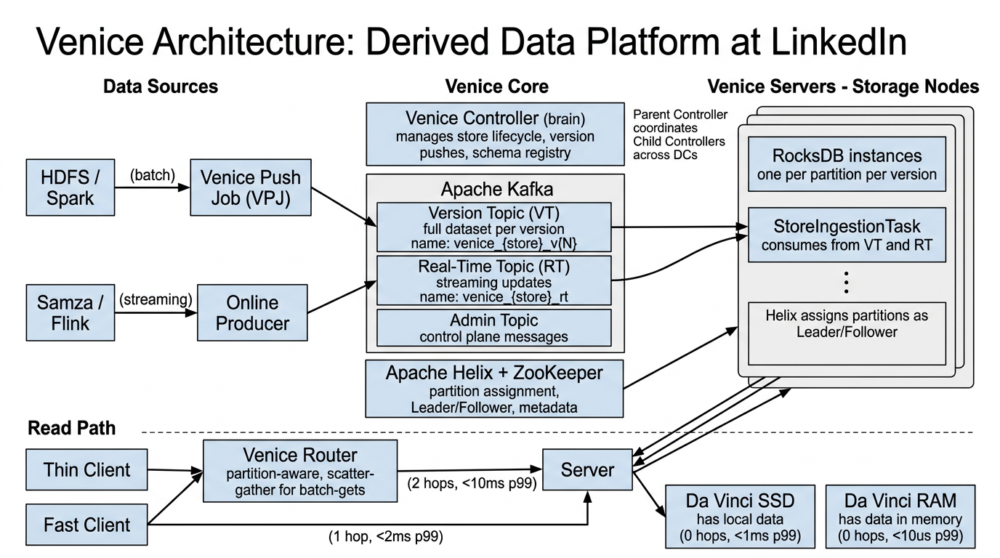
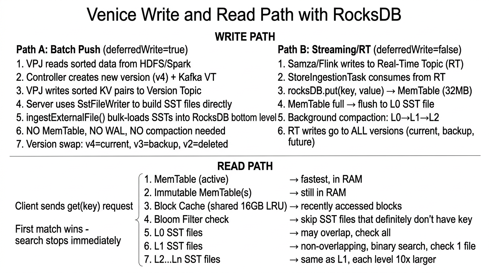
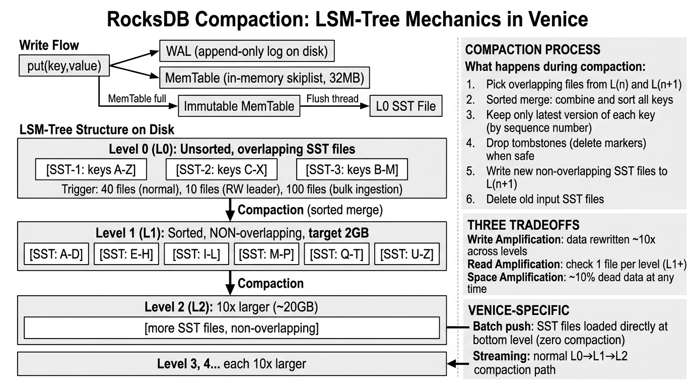
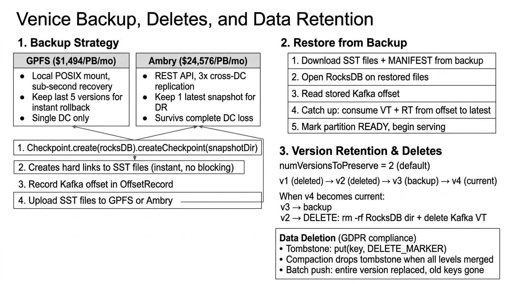

Derived Data Platform — Architecture, RocksDB Internals, Write & Read Paths, Compaction, Backup Strategy, Deletes & Data Retention
LinkedIn Infrastructure Deep DiveVenice is LinkedIn's derived data platform that bridges the offline, nearline, and online worlds. It ingests precomputed datasets from batch pipelines (HDFS/Spark) and streaming sources (Kafka/Samza/Flink), stores them in RocksDB, and serves them with sub-millisecond latency to online applications.
Each batch push creates a new version. The entire dataset is atomically swapped from old to new — zero downtime, no partial states, instant rollback.
Batch push from HDFS/Spark for full dataset refreshes. Streaming from Kafka for nearline updates. Hybrid stores combine both for freshness + completeness.
Thin Client (remote, simple), Fast Client (1-hop, low latency), Da Vinci SSD (local, <1ms), Da Vinci RAM (in-process, <10µs for ML inference).

The Controller is the brain of Venice. It manages store lifecycle, version pushes, schema registry, and partition assignment. A Parent Controller coordinates Child Controllers across data centers for multi-DC replication.
Servers host RocksDB instances for their assigned partitions. Each partition is an independent RocksDB instance. A StoreIngestionTask thread consumes from the Kafka VT and RT topics and writes to the local RocksDB.
The Router is a partition-aware read proxy for Thin Client requests. It looks up which server owns the requested partition, routes the request, and returns the result. For batch-get requests, it performs scatter-gather across multiple servers.
| Topic Type | Naming | Count | Retention | Purpose |
|---|---|---|---|---|
| Version Topic (VT) | venice_{store}_v{N} |
1 per version | Until version retired | Full sorted dataset for a batch push version. Consumed by servers to build RocksDB. |
| Real-Time Topic (RT) | venice_{store}_rt |
1 per store (hybrid) | Compacted / infinite | Streaming writes from Samza/Flink. Compacted to keep latest value per key. |
| Admin Topic | venice_admin_{cluster} |
1 per cluster | Long retention | Control plane commands from Parent Controller to Child Controllers. |
Venice uses Apache Helix for partition assignment and state management. Helix assigns each partition to a Leader and one or more Followers across servers. ZooKeeper stores partition metadata and provides leader election.
| Client | Hops | Latency (p99) | Architecture | Best For |
|---|---|---|---|---|
| Thin Client | 2 | <10ms | Stateless — sends request to Router, which routes to Server | Simple integration, no local state needed |
| Fast Client | 1 | <2ms | Caches routing metadata locally, sends requests directly to Server | Low-latency reads without local data |
| Da Vinci SSD | 0 | <1ms | Full dataset on local SSD via embedded RocksDB in the application | Ultra-low latency, large datasets |
| Da Vinci RAM | 0 | <10µs | Full dataset in application RAM via in-memory RocksDB or off-heap | ML inference, feature serving |
Venice has two completely different write paths. Understanding the difference is critical because they interact with RocksDB in fundamentally different ways.

deferredWrite=true)Batch push is Venice's flagship ingestion mode. It takes a sorted dataset from HDFS/Spark and bulk-loads it into RocksDB bypassing the MemTable and compaction entirely.
v4). Controller creates a new Kafka Version Topic venice_{store}_v4.VeniceWriter.SstFileWriter to generate pre-sorted SST files directly — bypasses MemTable and compaction!ingestExternalFile() to bulk-load the SST files into RocksDB at the bottom level.SstFileWriter creates SST files directly from sorted input without going through the write-ahead log or MemTable. Since VPJ data arrives pre-sorted, this avoids all write amplification from compaction. The SST files are ingested at the bottommost level via ingestExternalFile(), meaning they never need to be compacted down. This is dramatically faster than row-by-row put() calls.
// From Venice's RocksDBStoragePartition.java - SstFileWriter for batch push
// Venice disables WAL and relies on flush via sync() for durability
protected final WriteOptions writeOptions; // WAL disabled for batch
private final String fullPathForTempSSTFileDir;
// Batch push path: sorted data → SstFileWriter → ingestExternalFile()
// Streaming path: unsorted data → rocksDB.put() → MemTable → flush → compaction
// Key insight: batch push produces SSTs at the BOTTOM level
// They never need compaction — zero write amplificationStreaming writes follow the traditional RocksDB write path through the MemTable and compaction pipeline.
rocksDB.put(key, value) → writes to WAL (durability) + MemTable (32MB skiplist in RAM).| Aspect | Batch Push | Streaming (RT) |
|---|---|---|
| Data source | HDFS / Spark (sorted) | Kafka RT topic (unsorted) |
| RocksDB entry point | SstFileWriter + ingestExternalFile() | rocksDB.put() |
| WAL usage | Disabled | Enabled |
| MemTable usage | Bypassed | Yes (32MB) |
| Compaction | None — SSTs loaded at bottom level | Full leveled compaction (L0 → L1 → L2...) |
| Write amplification | ~1x (no rewriting) | ~10x (compaction rewrites) |
| Version model | New version per push | Updates existing version in-place |
| Freshness | Periodic (hourly/daily) | Nearline (seconds) |
Venice reads follow RocksDB's LSM-tree lookup order. The read path short-circuits on the first match — once the key is found, the search stops immediately.
Each layer is checked in order. The moment the key is found, RocksDB returns the value without checking deeper layers.
The current write buffer. Contains the most recent writes. Fastest possible lookup — in-memory skiplist with O(log n) search. If the key was recently written, it's found here.
MemTables that are full and waiting to be flushed to disk. Still in RAM, still fast. Venice uses double-buffered MemTables (max 2), so at most 1 immutable MemTable exists.
An LRU cache shared across all RocksDB instances on the server. Caches recently-read SST blocks (16KB each). If the key's SST block was recently accessed by any store, it's in the cache. 16GB total across hundreds of RocksDB instances.
Before reading any SST file from disk, RocksDB checks the file's Bloom filter. A Bloom filter can definitively say "key is NOT in this file" (no false negatives) but may say "key MIGHT be in this file" (possible false positive). Skips ~99% of SST files that don't contain the key.
L0 files are flushed MemTables. They may have overlapping key ranges, so RocksDB must check ALL L0 files. This is why too many L0 files hurts read performance. Venice's L0 compaction trigger limits this.
L1 files have non-overlapping key ranges. RocksDB uses binary search on file boundaries to find exactly 1 file that could contain the key. Only that file is read.
Same as L1 — non-overlapping ranges, binary search, check at most 1 file per level. Each level is ~10x larger than the previous. Most data lives in the bottom levels.
| Scenario | Layers Checked | Disk I/O | Notes |
|---|---|---|---|
| Key in MemTable | 1 | 0 | Best case — recent write, pure RAM lookup |
| Key in Block Cache | 2-3 | 0 | Recently read key, still in LRU cache |
| Key on disk (typical) | 4-7 | 1 SST read | Bloom filter skips most files, 1 file per level for L1+ |
| Key doesn't exist | All levels | 0 (Bloom filter) | Bloom filter says "not here" for every SST file |

RocksDB uses a Log-Structured Merge-Tree (LSM-Tree) that optimizes for write throughput by batching writes in memory and flushing them to disk as sorted files.
put(key, value) → Write goes to the WAL (write-ahead log) for durability AND the MemTable (skiplist in RAM, 32MB).Venice uses Leveled Compaction, which is RocksDB's default and provides the best read performance.
L1 and above have non-overlapping key ranges within each level. This means a point lookup needs to check at most 1 file per level (after L0). This is why leveled compaction gives the best read amplification.
L0 is the exception — files can overlap, so all L0 files must be checked on reads.
| Setting | Value | Why |
|---|---|---|
| MemTable Size | 32 MB | Balance between write buffer and flush frequency |
| Max MemTable Count | 2 (double-buffered) | 1 active + 1 flushing; prevents write stalls while flushing |
| Block Cache | 16 GB shared | Shared LRU across all RocksDB instances on the server |
| SST Block Size | 16 KB | Granularity of disk reads and cache entries |
| Max Bytes for Level Base (L1) | 2 GB | L1 target size; L2 = 20GB, L3 = 200GB, etc. |
| L0 Compaction Trigger (normal) | 40 files | Balance read performance vs compaction frequency |
| L0 Compaction Trigger (RW leader) | 10 files | Leaders serve reads — need fewer L0 files for lower read latency |
| L0 Compaction Trigger (write-only) | 100 files | Write-only followers don't serve reads — tolerate more L0 files |
| Compaction Style | LEVEL | Best read amplification; 1 file per level for point lookups |
Each byte written to RocksDB may be rewritten ~10x as it's compacted through levels. A 1GB MemTable flush can cause 10GB of total disk writes over time as data moves L0 → L1 → L2.
With leveled compaction, a point lookup checks at most 1 SST file per level (plus all L0 files). Bloom filters eliminate most negative lookups. Best-case: 1 disk read.
Obsolete versions of keys and tombstones consume space until compaction removes them. Leveled compaction keeps this tight — typically <10% overhead.
| Style | How It Works | Tradeoff | Venice Usage |
|---|---|---|---|
| Leveled | Merge files level-by-level; non-overlapping within each level | Best read amp, worst write amp | Default for all stores |
| Universal (Size-Tiered) | Merge all files of similar size together | Better write amp, worse read/space amp | Not used |
| FIFO | Delete oldest SST files when total size exceeds limit | No compaction at all; time-series only | Not used |
SstFileWriter + ingestExternalFile() to load pre-sorted SST files directly at the bottom level. These files never go through the MemTable, never go through L0, and never need compaction. Write amplification is exactly 1x. This is why batch push is dramatically faster and cheaper than streaming writes for full dataset refreshes.

Checkpoint.create(rocksDB).createCheckpoint(snapshotDir) — Creates hard links to all current SST files in a snapshot directory. This is instant (just filesystem metadata operations) and non-blocking (reads and writes continue normally).OffsetRecord metadata — captures the exact position in VT/RT topics at the time of the snapshot.| Aspect | GPFS | Ambry |
|---|---|---|
| Cost | $1,494 / PB / month | $24,576 / PB / month (16x more) |
| Recovery Time | Sub-second (local POSIX mount) | Minutes (REST API download) |
| Access | Local POSIX filesystem mount | REST API (cross-network) |
| Replication | Single DC | 3x cross-DC replication |
| Versions Kept | 5 versions | 1 snapshot |
| Use Case | Fast recovery, local backup | Disaster recovery, cross-DC restore |
SST files in RocksDB are immutable — once written, they never change. This enables efficient incremental backups:
ingestExternalFile). The entire dataset is replaced.| Method | Process | Restores From | Data Completeness |
|---|---|---|---|
| BackupEngine API | Flush MemTable first, then backup SST files only (no WAL needed) | SST files alone | Complete — MemTable was flushed before backup |
| Manual copy | Copy SST files + WAL files | SST + WAL replay | Complete — WAL replayed on restore to recover MemTable data |
SST files only contain data that has been flushed from the MemTable. Any writes still in the active MemTable are not in any SST file. To get complete data:
SST files + WAL = complete dataBackupEngine which flushes the MemTable before backup, making the backup purely SST-based (no WAL needed)Venice keeps a configurable number of versions per store. The default is numVersionsToPreserve = 2: one "current" version serving reads, and one "backup" version for instant rollback.
rm -rf the entire RocksDB directory for v2 + delete the Kafka VT venice_{store}_v2 after its retention periodput(key, DELETE_MARKER) writes a tombstone to the RT topicrm -rf'd on version retirego/data-deletion. For Venice, the process depends on store type: batch-only stores are naturally purged on the next push, while hybrid stores require explicit delete markers that propagate through compaction.
/db/{storeName}_v{version}/partition-{id}/
├── MANIFEST-000001 # RocksDB metadata: SST file list, levels, sequence numbers
├── CURRENT # Points to the active MANIFEST file
├── OPTIONS-000001 # RocksDB configuration snapshot
├── 000023.sst # SST data file (sorted key-value pairs)
├── 000024.sst
├── 000025.sst
└── 000026.log # WAL file (for streaming writes only)
# Each partition = independent RocksDB instance
# 100 partitions × 2 versions = 200 RocksDB instances per server
# Each instance has its own MemTable, L0-Ln levels, and WAL| Dimension | Typical Value | Impact |
|---|---|---|
| Partitions per store | 100 | Parallelism for ingestion and serving |
| Versions per store | 2 (current + backup) | Storage doubles; instant rollback |
| RocksDB instances per server | ~200 | All share 16GB Block Cache |
| Stores per cluster | 100s | Controller manages all store metadata |
Restoring a Venice partition from backup involves downloading the snapshot, opening RocksDB, and catching up from Kafka to the present.
OffsetRecord). This tells the server exactly where it left off in the VT and RT topics.put(). This replays everything that happened after the backup was taken.| Factor | GPFS Restore | Ambry Restore |
|---|---|---|
| Download time | Sub-second (hard links) | Minutes-hours (network transfer) |
| RocksDB open | Milliseconds | Milliseconds |
| Kafka catch-up | Depends on: backup age × write rate | |
| Total for fresh backup | Seconds | Minutes |
| Total for 7-day-old backup | Replay 1 full VT + 7 days of RT writes (could be hours for large stores) | |
Minimal Kafka catch-up needed. Restore completes in seconds (GPFS) or minutes (Ambry). The server quickly reaches READY state and begins serving.
Must replay days of Kafka messages. For high-write stores, this can mean replaying terabytes of data. Restore can take hours, during which the partition is unavailable or served by other replicas.
SstFileWriter + ingestExternalFile() instead of regular put() calls? What are the performance implications?numVersionsToPreserve and what happens when a new version is pushed? Describe the full lifecycle.